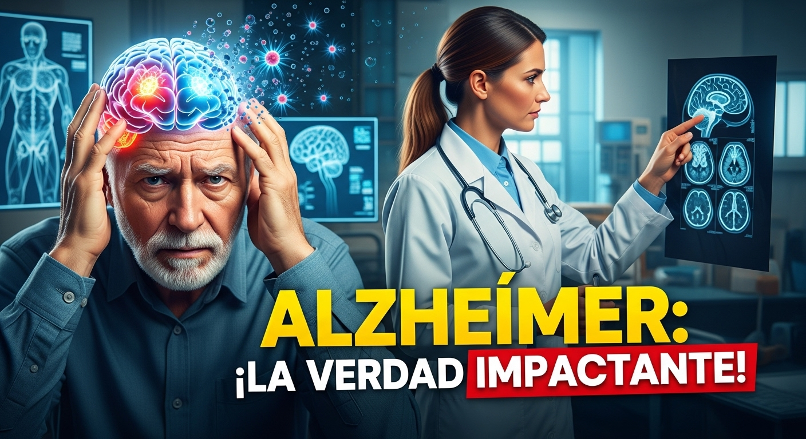
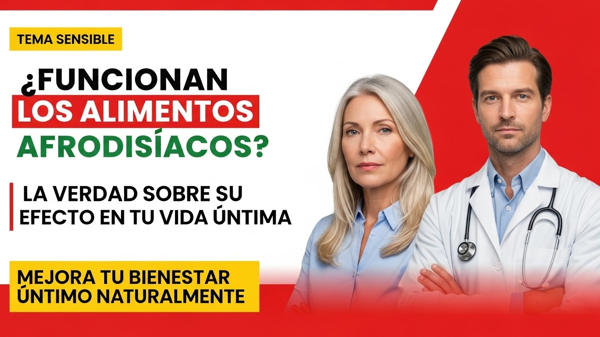
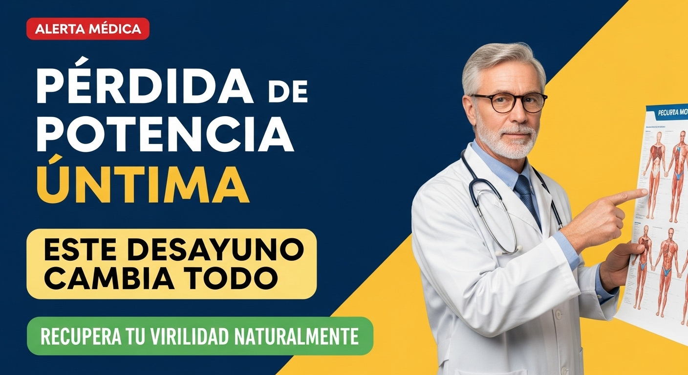
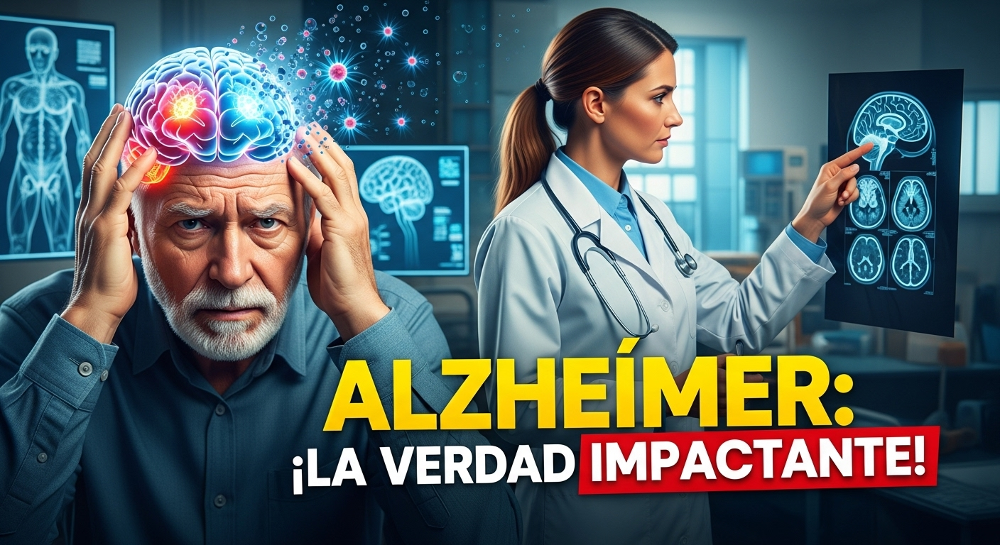
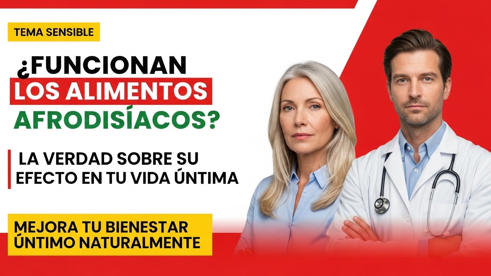
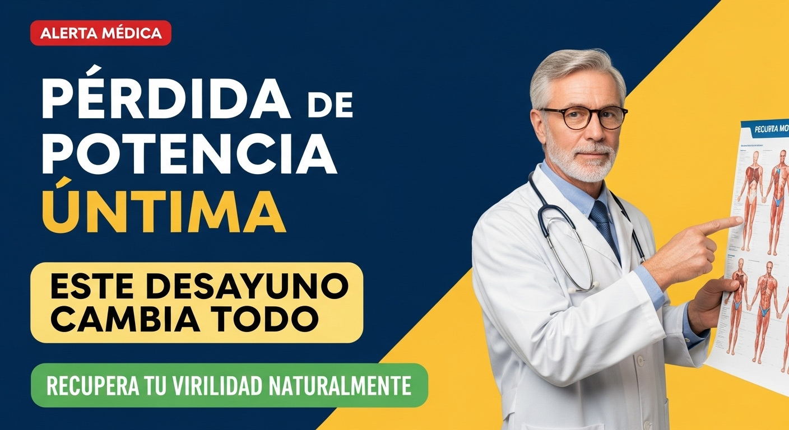

Spanish Health & Science YouTube Channel
AI Automation Project
Name: Abdullah Bhatti
Team: VitaCore
Supervisor: Sir Rizwan-ul-Haq
Organization: Forte College, Sargodha
October 2025
Executive Summary
This project demonstrates how AI automation can create complete YouTube videos without manual work.
Using tools like ChatGPT, Gemini, ElevenLabs, and Runway ML, we developed a Spanish Health & Science channel that automatically generates scripts, voiceovers, videos, and thumbnails.
The goal was to explore how AI simplifies content creation, reduces production time, and breaks language barriers, showcasing AI’s potential in education and media.
Background & Problem
The rise of AI has transformed media creation. Creators can now use automation for research, scripting, and editing—minimizing effort while maintaining creativity.
Problem: Many students and creators lack the time or technical skill to produce multilingual, high-quality educational content.
Objectives & Scope
- Automate video creation using AI tools.
- Generate high-quality Spanish content.
- Improve productivity and creativity.
- Demonstrate AI for global content reach.
*Scope: Focused on short-form Spanish Health & Science videos. No live recording.
Tools & Technologies
ChatGPT & Gemini
Script Writing
ElevenLabs
Spanish Voice Generation
Ideogram & Leonardo AI
Image Generation
Hailuo AI & Runway ML
Video Generation
Capcut
Video Editing
WhiskLab
Thumbnail Generation
System Design & Methodology
The system functions as a linear automated pipeline, where each AI tool handles a specific phase from idea to final upload.
Implementation & Challenges
Development Process
The implementation began by defining the workflow. Scripts were generated using Gemini, processed into Spanish voiceovers via ElevenLabs, and synchronized with AI-generated visuals from CapCut and Runway ML. Thumbnails were created using Ideogram to match the video's theme.
Challenges Faced
- Voice Sync Mismatches: Solved via manual timing adjustments in post-processing.
- Thumbnail Variation: Managed by refining and standardizing generation prompts.
- Tool Integration Limits: Overcome by creating a structured, sequential workflow.
Results & Output
High-Quality Videos
Produced multiple Spanish Health & Science videos with realistic AI narration and engaging visuals.
Attractive Thumbnails
Generated consistent, AI-designed thumbnails with high Click-Through-Rate (CTR) potential.
80% Effort Reduction
The fully automated workflow reduced manual content creation effort by an estimated 80%.
(Visuals to be shown: screenshots of videos, thumbnails, and AI tool interfaces)
Generated Thumbnails Showcase
 





Conclusion
This project successfully proved that a fully automated pipeline can replace traditional content creation workflows. Using tools like Gemini and ElevenLabs, we built a robust, multilingual content pipeline that empowers creators to reach a global audience with minimal resources, highlighting the real-world impact of AI in media and education.